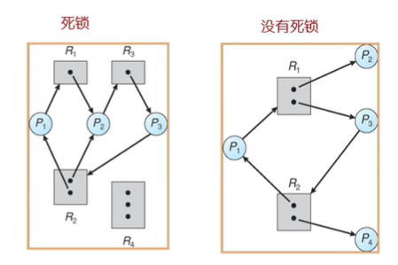

创建时间：
2020/04/26 16:05
作者：
lzr
死锁特征
死锁可能出现 如果
四个条件同时成立
互斥：在一个时间只能有一个进程使用资源
持有并等待：进程保持至少一个资源正在等待获取其他进程持有的额外资源。
无抢占：一个资源只能被进程自愿释放，进程以及完成了他的任务之后。
循环等待：存在等待进程集合{p0，p1，，，，pn}，p0正在等待p1所占用的资源，p1正在等待p2占用的资源。。。。pn-1在等待pn占用的资源，pn正在等待p0占用的资源。（即为存在环）
